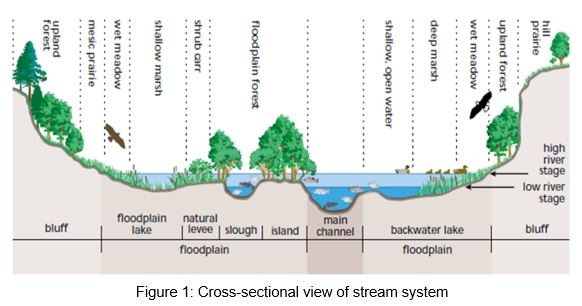
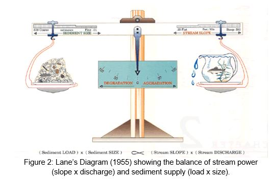
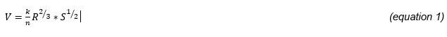
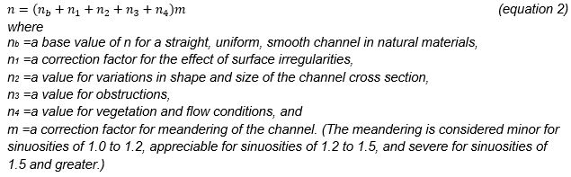
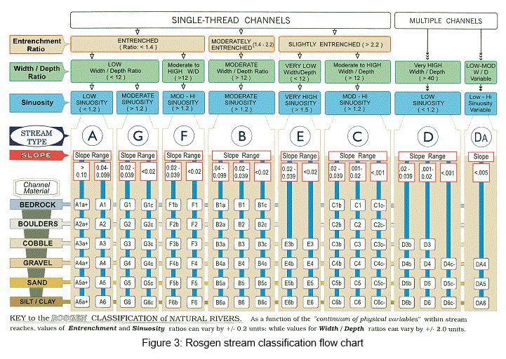
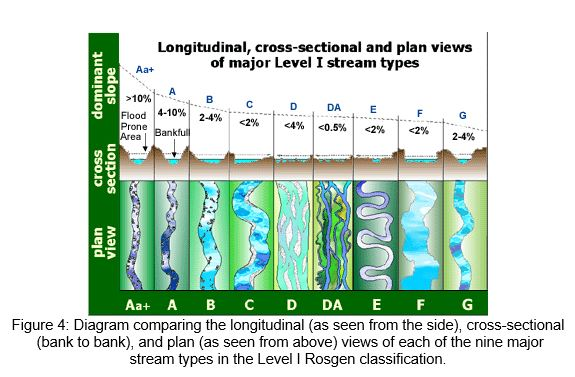
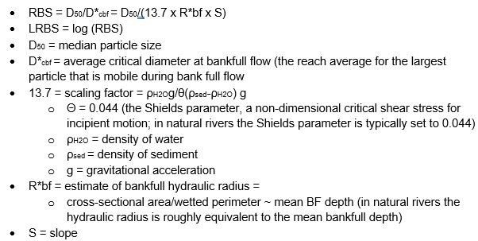

Chapter 28 Supplemental chapter on field methods in fluvial geomorphology
The term “fluvial” references running waters, “geo” refers to earth, and “morphology” refers to channel shape. Thus, fluvial geomorphology is the study of stream form and function as well as the interactions between streams and the surrounding landscape. Stream systems are dynamic meaning they physically respond to upstream inputs of streamflow, sediment, and debris. In this module, we will introduce how to measure a stream slope and cross section, determine a Manning’s roughness coefficient, classify a stream based on the Rosgen Classification system, quantify the grain size distribution of sediment with the Wolman pebble count, and calculate the relative bed stability (RBS).
28.1 Overall Learning Objectives:
At the end of this module, students will understand the key principles of fluvial geomorphology including defining characteristics of a channel cross section, determining a Manning’s roughness coefficient, classifying a stream based on the Rosgen Classification system, quantifying the grain size distribution of sediment with the Wolman pebble count method, and using these measurements to determine the relative bed stability.
28.3 Stream Cross Section and Gradient

Field Cross Section Methods:
A stream system is not defined by only the main, active channel but also how that channel interacts with the surrounding landscape. Because of this, we also take note of the bankfull location and the flood-prone area when assessing a stream cross section. The bankfull location is the water level at which the stream begins to spill out of the main channel into the active floodplain. Bankfull flow has a recurrence interval of ~1.5 years, although this varies and is debated. Bankfull flows tend to move most of the sediment over time and are largely responsible for shaping the stream channel. Bankfull locations can be visually observed in streams where there are changes in slope, vegetation and particle size. The flood prone area is defined by the width at two times the maximum bankfull depth. Frequency analysis of historic data suggests that the floodprone area is inundated at a 50 year recurrence interval.
Stream gradient is another important control on channel morphology. The gradient of a river is a measure of drop in elevation of a stream per unit horizontal distance (i.e. slope). Generally, steeper gradients are associated with faster flowing water and more erosive potential. Gradient can be measured using a clinometer and stadia rod over a short (e.g. 10 m) stretch of the river.
See supplemental video here:
Overall, the observer with the clinometer first determines the point on the stadia rod that reads 0 slope while the stadia rod is held nearby with the bottom set on the channel bed. Then their teammate measures 10 meters downstream and holds the stadia rod against the channel bed. The observer, who has remained in the same location, looks at the zero point on the stadia rod with one eye and records the slope reading on the clinometer. Generally, 10 meters is about the limit of how far people can accurately read the stadia rod, so in order to get slopes along 100 m of stream reach the team would simply repeat this process 10 times.
To get the water level gradient, follow the same procedure but hold the stadia rod so the bottom is even with the water surface as opposed to holding it on the channel bed.
28.4 Wolman Pebble Count
Field Wolman Pebble Count Method:
The grain size distribution of a streambed and banks influences the channel form and hydraulics, erosion rates, sediment supply, and other parameters. For example, steep mountain streams with boulders and cobbles are different than low-gradient streams with beds of sand or silt. Land management activities can shift sediment delivery or change streamflow which can lead to cumulative impacts to the aquatic ecosystem. Whether aggradation (i.e. accumulation of sediment) or degradation (i.e. removal of sediment) occurs with this shift is a function of the balance between stream power and sediment supply as defined by Lane’s Balance. Lane’s balance diagram (Figure 4) demonstrates how the channel may respond to a change in various parameters, such as sediment load, channel geometry, channel slope, erosional resistance, and discharges (hydrologic load). For example, by increasing the amount of sediment load the left side of the balance will lower and the scale will tip toward aggradation (sediment deposition); to bring the scale back in balance a change in either the channel geometry, slope and/or hydrologic load would be needed.

To quantify grain size distribution, in the field, we apply the Wolman pebble count method using a gravelometer. The observer walks from bankfull to bankfull, collecting material and recording the diameter of the channel material. The observer should remain unbiased during collection. The best way to achieve this is by averting your gaze and picking up the first particle touched by the tip of index finger as you bend over. Determine the smallest slot on the gravelometer that the particle fits through to determine the grain size and record that value. Measure embedded particles or those too large to be moved with the measurement increments on the side of the gravelometer or using a folding ruler. Continue this procedure until you have 100 or more measurements.
28.5 Manning’s Roughness Coefficient
Physical properties of a stream such as water depth, channel cross sectional area, stream gradient and channel material can also be applied to Manning’s equation to make estimates of discharge at a specific water depth. Manning’s equation (equation 1) calculates the average velocity, V, of uniform flow in an open channel based on channel properties: where R is the hydraulic radius (L), S is the channel slope (L/L), n is Manning’s roughness coefficient, and k is a unit conversion factor (k = 1 if R is in meters and V is m/s; k = 1.49 if R is in feet and V in ft/s). The hydraulic radius is computed as the cross-sectional area, divided by the wetted perimeter, P. In natural streams the hydraulic radius (R) and depth are nearly identical. Manning’s roughness, n, is a factor that characterizes the channel resistance. There are numerous methods to estimate n, but in this lesson we will focus on comparative (photos) and analytical (Cowan’s) methods.

Finally, discharge is calculated by multiplying V by the channel cross-sectional area, A (L2). This is particularly useful when estimating streamflow at bankfull depth or during a flood event when it isn’t safe to conduct direct measurements (i.e., wade across the stream to perform a velocity-area measurement).
Manning’s roughness coefficient (n) is commonly determined in the field by the comparative and analytical methods.
See supplemental video here:
See supplemental reading here:
Limerinos online calculator
To use the comparative method, photographs of channel segments for which n values have been verified can be used as a comparison standard to aid in assigning n values to similar channels. Refer to the USGS and USFS guides for selecting roughness coefficients:
Alternatively, Cowan (1956) developed an analytical procedure for estimating the effects of factors affecting channel roughness (i.e. channel shape and material) to determine the value of n for a channel. The value of n may be computed by equation 2.

To apply this equation, refer to Tables 1 & 2 found in the USGS “Guide for selecting roughness coefficients” (link here:)
28.6 Rosgen Stream Classification
River scientists often use this framework to classify complex natural river systems into groups that share common physical characteristics. The use of this consistent language allows for effective communication of stream geomorphology between scientific fields. To classify a stream reach correctly, you must complete a hierarchical assessment of channel morphology that includes assessing single or multi-thread channel, entrenchment ratio, width to depth ratio, sinuosity, slope, and grain size (Figure 2). You will use your measurements from section 1 to classify your local field site.
Sinuousity video:


- Supplemental reading on the Rosgen Classififcation System
28.7 Relative Bed Stability (RBS)
Relative bed stability (RBS) is a measure of bed stability, or how frequently sediment is mobilized. In streams that have high stability, the sediment is rarely mobilized. In streams with low stability, the sediment is frequently mobilized even at low flows. In a natural stream that is not influenced by disturbance, the bed stability tends toward a moderate value where the bed isn’t too stable or too unstable. Human modification of the landscape (land use and land cover change), human modification of hydrologic regimes (e.g., damming), or natural disturbances like wildfire can alter the balance between flow and sediment supply and thus impact bed stability. For example, downstream of dams the river tends to be sediment starved and the bed often becomes “armored”, meaning that only extremely high flows will mobilize sediment. Conversely, wildfire can deliver large amounts of small sediment (e.g., sand) to the stream channel such that the stream bed becomes extremely mobile. As such, RBS can be used to help hydrologists and geomorphologists assess stream condition and can be used as an indicator of land use, land cover, and water resource management (i.e., damming) impacts on river ecosystems.
To calculate RBS, you will use the data collected in sections 1.1-1.4:

A LRBS (log of RBS) value of 0 indicates a stream where flow and sediment supply are balanced. As values become more negative, they indicate excess sediment. Conversely, positive values indicate a lack of sediment supply and bed armoring.
Reading on using RBS to determine human impacts on streams